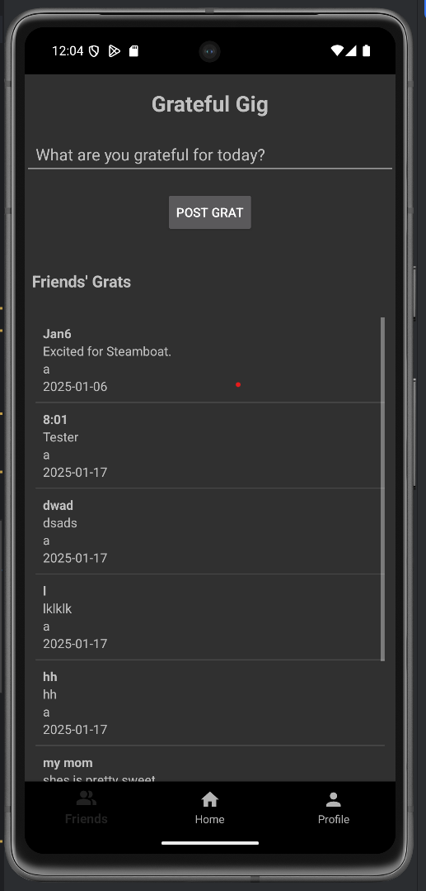
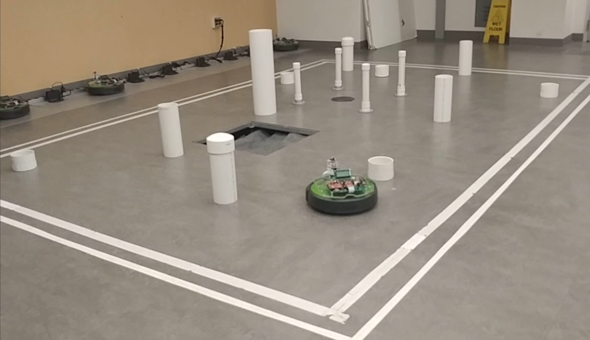
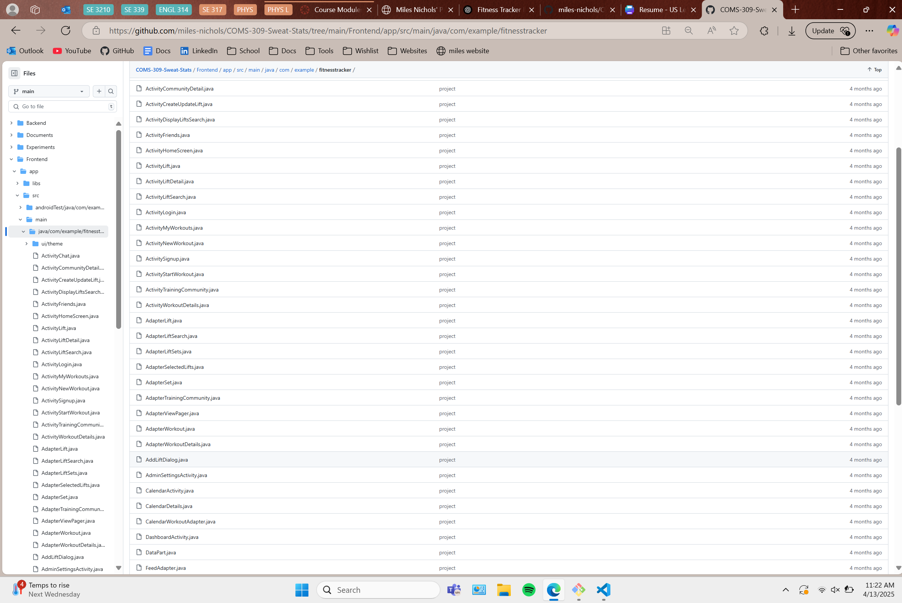
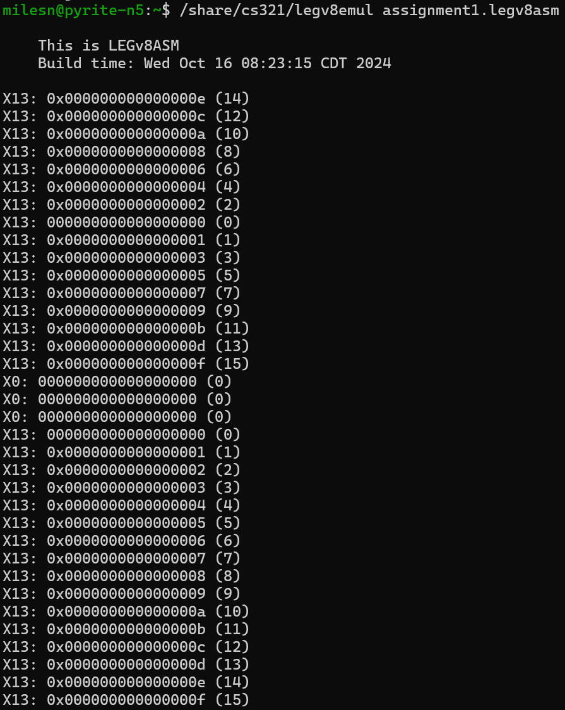

GitHub Repository
Designed and developed a social media platform centered around
daily gratitude sharing and community engagement. Created an
intuitive Android front-end using Java and XML in Android Studio,
focusing on user-friendly interactions and aesthetic design.
Engineered the back-end in Java using IntelliJ, integrating with a
MySQL database for secure and scalable data management. Built and
tested RESTful APIs, ensuring reliable client-server
communication, using Postman for thorough endpoint validation.
Employed Git for version control, maintaining clean commits and
collaborative development practices. Prioritized clean,
maintainable code through consistent testing and debugging
strategies, delivering a smooth user experience.
November 2024 - December 2024
Autonomous Navigation Robot

GitHub Repository
|
Project Proposal
Led the design and development of a microcontroller-based robot
capable of autonomously navigating a predefined, unknown course.
Managed a team of six by streamlining collaboration through clear
task delegation, regular meetings, and consistent communication.
Designed and implemented control algorithms in C to process data
from integrated sensors—including ADCs, ultrasonic distance
sensors (ping), and servos to accurate movement and real-time
obstacle avoidance. To support development and debugging, built a
custom Python-based GUI that visualized sensor data and provided
live system feedback. System performance was refined through
iterative testing and calibration, improving both sensor accuracy
and motor coordination for reliable autonomous navigation.
August 2024 - December 2024

Demo
|
GitHub Repository
Sweat Stats is a mobile fitness tracking application built to
help users log workouts, track progress, and set fitness goals
through an intuitive and responsive interface. As a front-end
developer on a team of four, I collaborated closely with another
front-end engineer and two back-end developers to bring this
project to life.
I led the development of the user interface using Java and XML
in Android Studio, prioritizing a clean layout, smooth
navigation, and mobile responsiveness. I structured the
front-end components with modularity and reusability in mind,
enabling faster iterations and easier maintenance. My
responsibilities also included connecting the UI with real-time
data services and ensuring smooth integration with the backend
through well-defined APIs.
To support real-time features, I implemented WebSocket
connections that allowed dynamic syncing of user data (such as
workout logs and performance stats) across sessions. I also
integrated HTTP-based CRUD operations to fetch, update, and
delete user records, enabling seamless communication between the
client and server.
I contributed to the DevOps pipeline by configuring CI/CD
workflows to automate builds, testing, and deployment. This
significantly enhanced our team's development velocity and
helped catch integration issues early.
Through this project, I gained hands-on experience in
collaborative software development, real-time systems
integration, and building production-ready mobile interfaces
with performance and user experience in mind.
February 2025 - March 2025

GitHub Repository
As part of a team project for a systems programming course, I
implemented the heapsort algorithm entirely in LEGv8
assembly language, working closely with a partner to tackle
low-level memory and register management. This assignment was
designed to reinforce our understanding of ARMv8 architecture
and calling conventions while developing a modular, efficient
sorting algorithm without relying on nested loops.
I contributed to designing and coding multiple modular
procedures, each adhering strictly to the ARMv8 calling
conventions. These included custom memory access, stack frame
setup, and careful register allocation to preserve program
state. We wrote unit tests and used the provided in-house
legv8emul emulator on a Linux-based remote server
(Pyrite) to verify functionality and correctness. Debugging
involved using emulator-specific pseudo-instructions like
PRNT, DUMP, and HALT, as
traditional debugging tools were unavailable.
The emulator environment simulated memory and stack separately,
emphasizing safe memory management and realistic hardware
constraints. We managed main memory directly using byte-level
addressing, handled 8-byte integers with precision, and
carefully tested each function in isolation before integration
to avoid cascading bugs.
This project not only sharpened my skills in assembly language
and low-level systems thinking but also improved my ability to
work in a collaborative environment under strict submission and
formatting guidelines. The experience deepened my understanding
of computer architecture and reinforced best practices for
memory-safe, procedure-driven programming in a constrained
environment.